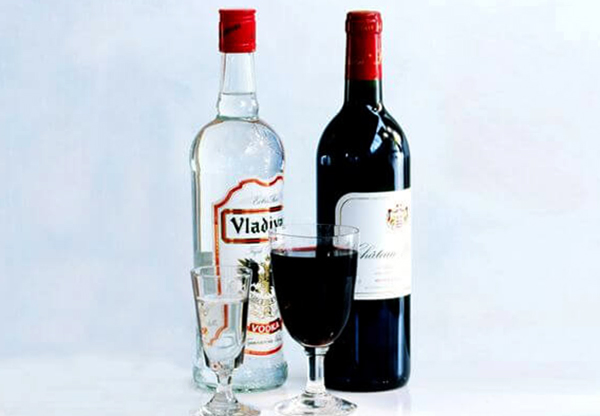

Лечение водкой и вином . Сам себе винодел .

Каждому из вас не раз приходилось сталкиваться с такой ситуацией: вы входите в винный магазин, видите полки с самыми разными сортами вин и не знаете, на котором из них остановить свой выбор. Что-то вам рекомендовали знакомые, что-то вы некогда пробовали сами, но не хотите останавливаться на уже испытанном и желаете попробовать что-нибудь новенькое и качественное.
Однако не всегда ваш выбор оказывается удачным, и вы сетуете на производителей вин, которые выпускают в продажу таков вино. Чтобы не покупать «кота в мешке», вспомните о том, что хорошее вино бывает не только в магазине. Вы, наверное, замечали, что домашнее вино, приготовленное по бабушкиному рецепту, намного вкуснее, его приятнее пить, оно не опьяняет, а приятно расслабляет. Кроме того, домашнее вино полезнее. Не замечали ли вы, выпив его, как улучшается настроение и самочувствие? Порой лучше всякого лекарства оно помогает излечиться от простуды и других болезней.
В этой главе вы узнаете, как приготовить красное вино в домашних условиях. Это обойдется вам намного дешевле: ведь продукты, которые используются при приготовлении домашнего вина, чаще всего находятся под рукой (растут на дачных участках). Иногда это может быть виноград, растущий во дворе, на даче, клубника, вишня и другие ягоды. А если нежданно-негаданно нагрянут гости, вы быстро решите проблему угощения, достав из буфета бутылочку вина собственного приготовления: как удивятся и порадуются гости! Хорошее домашнее вино будет украшением любого стола, оно улучшит вкус любого блюда, добавит пикантности вечернему ужину.
От вас при приготовлении вина потребуется лишь более или менее точное следование указаниям. Лучшее вино то, которое дольше стоит. Ведь бывало так, что, достав из погреба какую-нибудь затерявшуюся бутылочку, которую еще, похоже, когда-то бабушка делала, когда приезжала, или большую банку с вином, которое сами вы делали, да у вас ничего не получилось и вы забросили ее, вы вдруг обнаруживаете, что вино стало хорошим, крепким, вкусным. И вы в восторге бежите всех угощать, хвалитесь, что это вы сами сделали.
Для того чтобы вино имело приятный аромат, в него можно добавить сухую гвоздику, различные лекарственные растения, такие как цветки бузины, липы, арники горной, почки березы, черной смородины, корни аира, девясила. Помимо этого, широко используются зверобой, донник, зубровка, мята, полынь, чабрец, тысячелистник, мелисса, а также кориандр, кардамон, миндаль, мускатный орех, тмин, укроп, шафран и т. д. Эти растения не просто сделают ваше вино ароматным, но и наполнят его лечебными свойствами благодаря переходу в вино значительной части биологически активных веществ, содержащихся в этих растениях.
Когда вы приступите непосредственно к приготовлению домашнего вина, откажитесь от использования приборов, сделанных из железа, т. к. сок ягод окисляет железо, которое вследствие этого придает вину неприятный вкус. Лучше, если приборы будут деревянными, а посуда глиняной или стеклянной.
Измельченные ягоды, перетертые и превращенные в мезгу, можно оставить в каком-нибудь чистом сосуде на сутки в помещении при температуре 15–2 °C для того, чтобы ягоды забродили. Если мезга получается слишком густая, ее следует немного разбавить водой, чтобы легче шло брожение (только помните, это необходимо потом принять в расчет при добавлении воды и сахара). После того как мезга настоится, количество выжатого сока увеличится, в нем будет больше сахара и ароматических веществ, а от этого улучшится качество вина.
Мезгу рекомендуется оставлять в деревянной посуде, поскольку брожение в ней идет намного быстрее, чем в стеклянной или какой-либо другой. В деревянной емкости вино также лучше сохраняется, однако в стеклянной видны все процессы, происходящие во время брожения, поэтому начинающие виноделы могут использовать ее.
Необходимо учитывать качество продуктов, используемых для приготовления домашнего вина. Качество воды, сахара и кислоты в значительной степени влияет на достоинства получаемого вина, а потому надо использовать родниковую воду.
Итак, после того как вы приготовите ягодную мезгу для брожения, настаивайте ее в течение суток в теплом помещении, лкрыв сосуд пробкой или чистой тряпочкой (для того чтобы в пине скорее началось брожение, которое будет заметно по выделению пузырьков газа, а также по слабому шуму). Если брожение не развивается почему-либо, надо прибавить немного раздавленного чистого изюма (120–150 г на одно ведро).
По истечении суток, когда развилось брожение, сосуд закройте пробкой или крышкой, в которую вставьте один конец трубки, а другой опустите в сосуд с водой. По этой трубочке легко узнать, есть ли брожение в сосуде.
Иногда для приготовления вин требуется закваска. Чтобы не было проблем с ее приготовлением, тот или иной рецепт будет сопровождаться подробными инструкциями по приготовлению этой закваски. Использовать при этом пивные и хлебные дрожжи не советуем, они только испортят вино, лучше всего подходят винные дрожжи.
Любое вино требует определенной выдержки. Зрелость вина можно узнать следующим способом: влить немного вина в стакан и оставить его на свежем воздухе на 1–2 дня; если на дне не окажется осадка, можно считать, что вино вполне выбродило — вызрело, и осталось только дождаться того момента, когда оно наполнится крепостью и неповторимым вкусом.
А теперь перейдем от слов к делу и остановимся на нескольких рецептах, по которым вы сможете приготовить отличное домашнее вино. Начните с приготовления виноградного вина.
ВИНОГРАДНОЕ ВИНО
ВИНО «ИЗАБЕЛЛА»
Требуется: 8 кг винограда «Изабелла», 10л воды, 1 кг сахара.
Способ приготовления. Сварите сироп из воды и сахара, охладите его. После того как сироп остынет, залейте им предвари, тельно размятый виноград. Желательно делать это какой-нибудь большой банке (так будет видно, что происходит с содержимым). Поставьте банку в теплое место, предварительно сделав водяной затвор. После того как вино перебродило, отделите молодое вино от осадка, образовавшегося в нем (самый простой способ — с помощью марли) и поставьте бродить второй раз. В этот период пузырьки газа будут выделяться слабо, а в конце совсем исчезнут. Когда брожение закончится, разливайте вино по бутылкам.
Процеживание необходимо для того, чтобы отделить вино от осадка, в котором много различных нерастворимых частиц, которые легко загнивают и придают вину особый привкус, а то и вовсе портят его.
ВИНО «ЛИДИЯ»
Требуется: 6 кг винограда «Лидия», 8 л воды, 1,5 кг сахара, 0,5 лимона, винные дрожжи.
Способ приготовления. Размятый виноград засыпьте сахаром, добавьте нарезанный дольками лимон, дрожжи, залейте содой. Оставьте бродить, после чего процедите и разлейте в бутылки.
ВИНО КАГОР
Требуется: 6 кг винограда «Кагор», 1 кг сахара, 8 л воды.
Способ приготовления. Размятый виноград засыпьте 300 г сахара, оставьте на сутки, чтобы выделился сок. Затем залейте сиропом, сваренным из оставшегося сахара и воды. Оставьте бродить.
Вместо сахара можно использовать чистый мед (это относится и к другим винам), но вино тогда приобретет своеобразный вкус. После того как процесс брожения будет завершен, вино процедите и разлейте по бутылкам.
ВИНО ИЗ ИЗЮМА
Требуется: 1 кг изюма (можно с косточками), 2 кг сахара, б л кипяченой холодной воды, 0,5 л закваски.
Способ приготовления. Пропустите сахар с изюмом через мясорубку, добавьте в полученную массу 6 л воды и закваску. Все перемешайте и настаивайте 28–30 дней в эмалированном ведре или бутыли. Затем процедите через марлю полученное вино, разлейте по бутылкам.
Закваску готовьте следующим образом: возьмите 150–200 г изюма или винограда, всыпьте в бутылку, добавьте 50–60 г сахара и залейте кипяченой водой на три четверти объема. Затем закупорьте бутылку рыхлой ватной пробкой и поставьте в теплое место. Через 3–4 дня закваска будет готова к использованию. Чтобы закваска не испортилась, держите ее в холодильнике.
В данном случае должно получиться 6 л вина.
ЯГОДНОЕ ВИНО
Вы можете приготовить вино из ягод, растущих как в саду, так и в лесах и полях (например, из земляники, ежевики). При выборе ягод обращайте внимание на их зрелость, чистоту и сорт, т. к. от этого зависит качество будущего вина. Вишня, например, — самый лучший материал для приготовления ягодных вин. Она дает прелестное темно-красное вино. Ягоды лучше использовать где-то на третий день после сбора.
Из сортов крыжовника лучшими для виноделия считаются опущенные. Ягоды следует собирать в зрелом состоянии, но не перезрелыми, т. к. такие ягоды киснут легко, развивают плесень и дают мутное вино.
Малина, клубника и земляника дают очень ароматное вино высокого качества. Ягоды лучше снимайте зрелые и по возможности чистые, не нуждающиеся в дополнительной очистке водой. Используйте ягоды сразу же или на 2-й день после сбора. Смешивать белую и красную малину не следует.
Ирга дает очень вкусное красное вино (она к тому же очень распространена). А вот вино из ежевики, брусники, черники не отличается высокими достоинствами, особенно брусничное и черничное вино.
Вы можете готовить вино из одного сорта ягод, а можете смешивать, отчего только улучшатся его вкус и целебные свойства.
В зависимости от видов ягод могут получиться более или менее стойкие вина. Хорошо сохраняются вина из малины, смородины, крыжовника, черноплодной рябины. Менее стойкими считаются вина из вишни, сливы, земляники. Ягодные вина лучше хранить не более одного года.
ВИНО «ДОМАШНЕЕ»
Требуется:
Для закваски: 2 стакана ягод черной смородины, 100 г сахара, 1 стакан воды.
Для мезги: 2 кг черной смородины, 2 л воды, 1 кг сахара.
Способ приготовления. За 10 дней до приготовления вина нужно сделать закваску. Она готовится из дрожжей, которые находятся на поверхности ягод, поэтому ягоды не следует мыть.
Ягоды раздавите, переложите в стеклянную посуду, добавьте сахар и воду. Посуду накройте марлей и поставьте в теплое место для брожения. Через 10 дней процедите сок.
Теперь приготовьте мезгу. Ягоды переберите и промойте. Переложите ягоды в эмалированную посуду и раздавите деревянным пестиком. В полученную массу добавьте 3 стакана воды, тщательно перемешайте, процедите и выложите оставшуюся мезгу под пресс.
Взвесьте полученную массу, вычтите то количество воды, которое вы добавляли в мезгу. Оставшуюся воду добавьте в сусло.
Сусло слегка подогрейте. Добавьте в него закваску и 600 г сахара.
Смесь тщательно перемешайте и поставьте в теплое место для брожения. Горлышко бутыли необходимо заткнуть ватой.
На 4, 7 и 10-й день досыпьте в вино по 100 г сахар и снова поставьте в теплое место для брожения. Оно окончено тогда, когда вино становится светлым, на дне появляется осадок и сахар не определяется на вкус.
Вино осторожно перелейте в другую емкость. Нужно следить, чтобы осадок не взболтался, поэтому лучше использовать резиновую трубку. Эту процедуру необходимо повторить 2 раза.
Затем вино нужно плотно закрыть пробкой и поставить Я прохладное помещение. Через 1 месяц в вине опять появится осадок, который также необходимо убрать.
ВИНО ИЗ ЯГОД БУЗИНЫ
Требуется: 3 кг ягод бузины, 1 кг сахара, 3 л воды, 5 г лимонной кислоты, гвоздика, корица, винные дрожжи, 150 г изюма.
Способ приготовления. Промойте ягоды, удалите плодоножки, разомните. В полученную массу добавьте 100 г сахара, лимонную кислоту и залейте 2 л кипящей воды с лимонной кислотой. Полученную массу хорошо перемешайте, добавьте приправы и проварите около 15 мин. Затем охладите, процедите через марлю, отожмите хорошо, чтобы получилось как можно больше сока, вылейте его в бутыль. Добавьте раствор (900 г сахара в 1 л воды), подошедшие дрожжи, закройте бродильным шпунтом и оставьте бродить. После окончания брожения жидкость отцедите, оставьте добродить, а затем разливайте по бутылкам (можно при приготовлении сока добавить 150 г изюма, чтобы брожение шло лучше).
ВИНО «ВИШНЕВКА»
Требуется: 0,5 кг вишен, 0,7 л водки или черешневой наливки, небольшой кусочек корицы, немного гвоздики, 6 ядер вишневых косточек, 1/4 ложки молотого аира, корка 0,5 лимона, 0,5 небольшого апельсина с коркой, 200 г сахара, 200 мл воды.
Способ приготовления. Промойте вишню, поместите в широкую банку и разомните деревянной ложкой. Несколько косточек отдельно разбейте и полученные ядра положите в банку с вишнями. Залейте водкой, добавьте приправы, корку хорошо промытого лимона, нарезанный кружочками апельсин с удаленными косточками. Хорошо закупорьте и поставьте в какое-нибудь теплое место, например на окно (если это лето). Через 3–4 недели процедите жидкость, добавьте охлажденный сахарный сироп и 200 мл водки. Хорошо встряхните емкость с жидкостью, а затем перелейте все в бутылку с надежной крышкой.
Сахарный сироп сварите в таком количестве: 200 г сахара в 200 мл воды.
ВИНО СЛАДКОЕ ВИШНЕВОЕ
Требуется: 7 л вишневого сока, 1,6 л воды, 2,4 кг сахара (1,6 кг сахара вносить в сусло перед брожением, а остальные 0,8 кг — после брожения), 1 л водки, 0,5 л закваски.
Способ приготовления. Приготовьте смесь для брожения (способ приготовления в предыдущих рецептах), оставьте на 7—10 дней. По окончании брожения добавьте в вино водку (это называется спиртованием), перемешайте до получения одн0, родной массы и выдерживайте 5 суток. Потом вино профильтруйте, добавьте остальную часть сахара и разлейте по бутылкам. У вас должно получиться вино темно-вишневого цвета с ароматом плодов свежей вишни и слегка вяжущим вкусом.
ВИНО ИЗ КИЗИЛА
Требуется: 2,5 кг кизила, 4 л воды, 1,2 кг сахара, дрожжи (лучше винные дрожжи).
Способ приготовления. Вымытый кизил разомните деревянным пестиком и залейте 1 л кипящей воды с 200 г сахара. После охлаждения добавьте дрожжи и оставьте на 2 дня бродить в посуде, закрытой марлей. Потом отожмите и к соку прибавьте раствор 3 л воды с 1 кг сахара. Оставьте бродить под бродильным шпунтом. После окончания брожения подержите полученное вино еще 2 дня и разлейте по бутылкам.
ВИНО ИЗ ЕЖЕВИКИ
Требуется: 5 кг ежевики, 10 л воды, 3 кг сахара, 500 г меда.
Способ приготовления. Половину всех ягод положите в деревянный сосуд, разомните и залейте 6 л воды. Сосуд поставьте на 4 дня в прохладное место, после чего массу процедите через сито. Остальную ягоду разомните руками, залейте 4 л воды и оставьте на 6 ч в теплом месте. Затем процедите через сито, хорошо отжимая ягоды. Полученные жидкости (примерно 10 л) смешайте, добавьте сахар и мед. Влейте жидкость в маленький бочонок, закройте и поставьте в холодное место. Оставьте бродить в течение полугода, после этого у вас получится вкусное, ароматное вино.
ВИНО ИЗ МАЛИНЫ
Требуется: 3 кг малины, 1,5 кг сахара, 200 г водки, 5 л воды, половинка апельсина, гвоздика, 200 г вишни (для улучшения цвета и лечебных качеств вина).
Способ приготовления. Помните малину, добавьте пропущенный через мясорубку апельсин, засыпьте 500 г сахара, дайте настояться 2 дня, затем сцедите сок, добавьте в него сахарный сироп, водку и гвоздику.
ВИНО СЛАДКОЕ МАЛИНОВОЕ
Требуется: 6 л малинового сока, 2,6 л воды, 2,4 кг сахара, 1Л водки.
Способ приготовления. Вам следует готовить и спиртовать рино так же, как и сладкое вишневое вино. Готовое вино имеет щалиновый цвет, приятную кисловатость и аромат свежих ягод.
ВИНО ИЗ РЯБИНЫ
Требуется: 5 кг рябины, 1 кг сахара, 8 л воды, винные дрожжи, тысячелистник, мята.
Способ приготовления. Лучше всего использовать для приготовления вина ягоды рябины, собранные после заморозков, т. к. подмороженные ягоды слаще и лучше дают сок. Если же рябина снята до заморозков, ее, чтобы хорошо выделялся сок, а также для снижения горечи, сначала побланшируйте. Для этого отделенные от кистей ягоды залейте кипятком на 20–30 мин, затем, слив воду, еще раз повторите эту операцию. После второго прогрева рябину опустите в холодную воду. После бланшировки помните ягоды, выжмите сок. Рябиновое вино получается терпкое, поэтому вы можете добавить к соку рябины сок сладких яблок (это к тому же улучшит цвет вина).
Бланшированные ягоды засыпьте сахаром, добавьте дрожжи, оставьте бродить. После того как вино перебродит первый раз, пропустите его через марлю или через ткань, поставьте бродить второй раз, добавив ароматизаторы, можно добавить немного изюма для улучшения брожения. По окончании этого процесса вино процедите вновь и разлейте по бутылкам.
ВИНО СЛАДКОЕ ЗЕМЛЯНИЧНОЕ
Требуется: 8 л земляничного сока, 2,4 кг сахара, 0,5 л воды. Способ приготовления. Готовьте данное вино так же, как и bcs сладкие вина. В результате должно получиться 10 л вина.
ВИНО ЧЕРНИЧНОЕ
Требуется: 8 л черничного сока, 0,5 л воды, 2,4 кг сахара, 5 г лимонной кислоты.
Способ приготовления. Для приготовления этого вина вам потребуются свежие, но неперезрелые ягоды черники. В готовую мезгу добавьте 1 кг сахара, немного дрожжей, т. к. черника с трудом дает сок, и оставьте на сутки. После отжима сока выжимки залейте горячей водой идайте настояться в течение 12 ч, затем вторично отожмите. Сок после первого и второго отжима объедините, всыпьте остальной сахар, добавьте воды и лимонной кислоты. Можно добавить винные дрожжи, т. к. черничный сок дает слабое брожение. Сильно разбавлять вино водой не следует, иначе оно быстро испортится. Можно добавить ягоды красной и белой смородины, тогда вино будет схоже по вкусу и аромату с кагором.
ВИНО ИЗ ШИПОВНИКА
Это вино лучше всего использовать в лечебных целях, поэтому готовьте его в малых пропорциях.
Требуется: 500 г замороженного шиповника, 1,5 л водки, 200 мл воды, 1 апельсин, 15 г корицы, можно добавить небольшое количество ягод клубники.
Способ приготовления. Шиповник, клубнику, апельсиновую корку с половинками апельсина и корицей оставьте на 10 дней в водке. Затем сцедите и залейте охлажденным сахарным сиропом, сваренным из сахара и воды. Встряхните и разлейте по бутылкам.
ВИНО ИЗ ЧЕРНОПЛОДНОЙ РЯБИНЫ
ПЕРВЫЙ СПОСОБ
Требуется: 3 кг ягод черноплодной рябины, 30 г вишневых листьев, 0,5 кг сахара, 1 л воды.
Способ приготовления. Приготовьте мезгу из ягод, добавьте вишневые листья и сахар, все перемешайте, вскипятите и остудите, добавьте 1 бутылку водки, процедите, разлейте по бутылкам.
ВТОРОЙ СПОСОБ
Требуется: 6 л сока черноплодной рябины, 1,5 кг сахара, 3,5 л воды.
Способ приготовления. Приготовьте мезгу из ягод, оставьте их в стеклянной, деревянной или эмалированной посуде для брожения. Забродившую мезгу отожмите. Полученный сок процедите и слейте в бутыль или в бочку, а выжимки поместите в посуду с водой (половина от количества сока) и оставьте на сутки. Вода извлечет из мезги остатки сахара, кислот, красящих веществ и т. д. Через сутки эту массу снова отожмите, сок смешайте с соком первого отжима. В сок добавьте половину сахара, а через 2–3 дня, когда разовьется бурное брожение, всыпьте остальной сахар. Бутыль залейте водой, закройте ватной пробкой (чтобы для углекислого газа был свободный выход). Поставьте емкость бродить в теплое место. В течение 10–12 суток будет бурное брожение вина, затем оно замедлится — и в течение 15–20 суток процесс брожения будет протекать менее интенсивно. Полученное молодое вино аккуратно отделите от осадка. Полученное вино на вкус будет грубовато, с терпким вкусом, в нем будет ощущаться спирт, поэтому добавьте в него сахар (150 г на 1 л). Через месяц, когда растворенный сахар соединится со спиртом, вино станет приятным на вкус. И чем дольше вы будете его выдерживать, тем лучше и изысканнее будет вкус вина.
ВИНО КЛЮКВЕННОЕ
Требуется: 4 кг клюквы, 4,5 л воды, 2,5 кг сахара.
Способ приготовления. Ягоды промойте, мезгу хорошо прогрейте (это ускоряет соковыделение и улучшает качество вина), добавьте сок черники или голубики. Засыпьте сахар, залейте водой и поставьте бродить. Разливайте по бутылкам по окончании процесса брожения.
ВИНО ИЗ ВИШНИ, ЧЕРНОЙ СМОРОДИНЫ И ЯБЛОК
Требуется: 5 кг вишни, 2,5 кг черной смородины, 3 кг яблок, 10 л воды, 1,5 кг сахара.
Способ приготовления. Яблоки без косточек и кожицы пропустите через мясорубку, в полученную массу добавьте 300 г сахара, оставьте на сутки для выделения сока. В массу добавьте размятые ягоды вишни и смородины, поместите их в стеклянную банку, залейте охлажденным сахарным сиропом, сделайте водяной затвор. После брожения вино процедите, разлейте по бутылкам. Можете добавить ароматизаторы.
ВИНО ЧЕРНОСМОРОДИНОВОЕ
Требуется: 5 кг смородины, 3,6 л воды, 2,4 кг сахара.
Способ приготовления. Смородину переберите, тщательно промойте, потолките деревянной толкучкой. Так как сок из мезги черной смородины выделяется медленно, добавьте немного сахара и воды от общего количества смеси, положите дрожжи. Смесь оставьте для брожения на 2–3 дня, помешивая 3 раза в день, затем отожмите.
Можно и по-другому активизировать процессы соковыделения.
Для этого ягоды или мезгу подогревайте на медленном огне в течение 10 мин, постоянно помешивая. Перед прогреванием добавьте немного воды (учитывая ее количество при подготовке вина для брожения). Прогретую массу охладите и отожмите сок, выжимки залейте холодной водой (тоже учитывая общее количество воды), настаивайте еще два дня, часто помешивая, и снова отожмите. Сок после двух отжимов соедините, добавьте остаток воды, сахар и поставьте бродить. По окончании этого процесса процедите готовое вино и разлейте его по бутылкам.
ВИНО СЛИВОВОЕ
Требуется: 8 кг спелой сливы, 1 кг сахара, 10 л воды, 15 г корицы, 20 г лимонной кислоты, 30 г мяты.
Способ приготовления. Спелые сливы сладких сортов разрежьте, удалите косточки, залейте охлажденным сахарным сиропом, добавьте лимонной кислоты, поставьте бродить в стеклянной посуде, сделав водяной затвор. После того как вино перебродит, процедите его, отделите осадок, а в процеженное вино добавьте мяту, корицу и поставьте бродить второй раз.
КРАСНЫЙ ВЕРМУТ
Требуется: 3 л клюквенного вина, 7 л черничного вина, 1 л меда, 1 ч. л. настоя трав.
Способ приготовления. Для приготовления этого ароматизированного напитка смешайте вина с медом, добавьте травяную настойку, выдерживайте 3 недели, после чего разлейте в бутылки.
Настойку приготовьте следующим образом: 4 г тысячелистника,
3 г корицы, 3 г мяты, 1 г мускатного ореха, 2 г кардамона, 1 г шафрана, 3 г полыни залейте 250 г водки. Можно использовать другой состав трав: чабрец, богородскую травку, корневища фиалки, минник душистый, полынь. Травы измельчите, поместите в бутылку с водкой и дайте настояться в течение недели, ежедневно взбалтывая бутылку.
ПРИГОТОВЛЕНИЕ ШИПУЧИХ ВИН
Для их приготовления годятся следующие вина: яблочное, смородиновое, вишневое, крыжовниковое, малиновое и клубничное. Последнее дает превосходное ароматное шипучее вино.
Суть приготовления шипучего вина в том, чтобы заставить бродить молодое вино в закупоренных бутылках.
Мы расскажем, как приготовить шипучее вино из клубники, но этот способ годится и для других вин.
Требуется: 5 кг клубники, Зкг яблок, 1,5 кг сахара, Юлводы, 0,3 л закваски (или винные дрожжи).
Способ приготовления. Сначала приготовьте яблочную мезгу, пропустив яблоки без кожицы и сердцевины через мясорубку, добавьте размятую клубнику, засыпьте сахаром и оставьте на сутки для получения сока. После этого добавьте закваску, залейте все водой и оставьте бродить. После брожения обязательно процедите.
Затем приготовьте закваску: возьмите 2 стакана спелых ягод клубники (можно малины, земляники), разомните, поместите в бутылку, добавьте стакан воды и 0,5 стакана сахарного песка. Содержимое бутылки взболтайте, закройте ватной пробкой и поставьте в теплое темное место. Через 3–4 дня закваска начнет бродить, процедите ее и используйте. Храните закваску в холодильнике не более 10 дней.
Полученное молодое вино, предварительно процеженное, разлейте в бутылки, всыпьте чайную ложку сахарного песка или положите кусочек сахара-рафинада (можно также добавить несколько изюминок для ускорения процесса брожения), закупорьте хорошими толстыми пробками и завяжите горлышки бечевой, чтобы от внутреннего давления пробки не выскочили. Эту операцию проводите как можно быстрее и в прохладном помещении, чтобы предохранить вино от излишнего выделения углекислого газа. Бутылки для приготовления шипучего вина лучше взять из-под шампанского, т. к. другие бутылки от внутреннего напора могут лопнуть.
Закупоренные бутылки поместите (только не ставьте) в теплое место и оставьте бродить на 2–3 месяца. Затем, когда брожение пойдет на убыль, поставьте бутылки в наклонном положении на 1–2 недели в прохладном месте при температуре 13–15?С. Затем поставьте их вертикально, горлышками вниз (ежедневно вращайте бутылки, чтобы дрожжи постепенно отставали от стенок бутылок и скапливались в горлышке). В итоге вино должно просветлеть, а дрожжи собраться возле пробки в плотную массу.
Следующий этап — это удаление дрожжей. Операция потребует от вас быстроты и опыта в исполнении, т. к. от этого зависит чистота и шипучесть вина. Поэтому в первый раз лучше проделывайте эту операцию с помощником.
Предварительно нужно приготовить пробки для закупоривания бутылок и веревку для их завязывания. Для улучшения вкуса вина можно добавить ликер, который желательно приготовить заранее (составные ликера должны быть такими же, как и в вине).
Затем возьмите бутылку, не меняя ее положения, осторожно развяжите веревку и вытащите пробку. Пробка должна вылететь, а вместе с ней и дрожжи (в качестве осадка). Все надо делать быстро и осторожно, чтобы не взболтать дрожжи и пролить как можно меньше вина. Бутылку закупорьте пальцем, чтобы не выходил углекислый газ. Затем долейте в бутылку ликер, тут же закупорьте пробкой и хорошенько перевяжите. Пробку заливают сургучом или любым другим составом, чтобы вино не испарялось и воздух не проникал внутрь.
Это вино выдерживайте в течение 3–5 месяцев. Если все сделаете правильно, у вас получится прекрасное шипучее вино.
Если при изготовлении домашнего вина вы будете соблюдать все рекомендации, получите прекрасное вино, которым с гордостью станете потчевать гостей.
Как вы уже знаете, свое название белое вино получило от цвета винограда, из которого оно производится. Но белое вино отличается от красного не только цветом. При его изготовлении происходит сбраживание отпрессованного виноградного сока, а при производстве красного вина бродит не только сок, но и мезга (дробленая ягода, кожица которой имеет красящие вещества, придающие вину красный цвет). Именно поэтому многие гурманы считают красное вино более приятным по своему внешнему виду и, конечно, по своим вкусовым качествам. Но позволим себе не согласиться с этим односторонним мнением, т. к. белое вино также обладает рядом достоинств и прекрасных качеств. Даже его внешний вид очень привлекателен. Скажите, кто может спокойно взирать на золотистый оттенок, например, яблочного вина? Конечно же, никто, потому что оно обладает не только красивым внешним видом, но и приятными вкусовыми и ароматическими свойствами.
Белое вино. Сразу же хочется испробовать и оценить его качество. Но не всякое «магазинное» белое вино способно усладить вкус, а вот домашнее может оказаться гораздо вкуснее и красивее. Чтобы его получить, нужно знать, как правильно приготовить подобный шедевр винодельного искусства. Предлагаю несколько рецептов, которые помогут вам в бытовых условиях изготовить разные сорта белого вина и пополнить домашний погребок.
Чтобы приготовить хорошее белое вино из плодов и ягод, используйте только свежие или пастеризованные соки, которые не были предварительно разбавлены водой или подсахарены. Только в таких соках находятся все необходимые питательные и вкусовые вещества, присутствующие в свежих плодах и ягодах.
КАК ПРАВИЛЬНО ПРИГОТОВИТЬ СОК ДЛЯ БЕЛОГО ВИНА?
Для соков нужно тщательно отобрать плоды и ягоды, очень спелые, зрелые. Нельзя использовать еще недоспевшие плоды, т. к. они имеют повышенную и вредную для вина кислотность. Перезревшие плоды также не подходят для соков, т. к. они плохо отдают его. К тому же такой сок трудно фильтровать и осветлять. Кому понравится мутное вино? Не берите гнилые, испорченные или больные плоды и ягоды: вино из них будет иметь неприятный привкус.
Сколько сока выйдет из 1 кг ягод? Начинающий винодел может рассчитывать на то, что из 1 кг ягод получится от 0,65 до 0,75 л сока. Количество зависит от качества и сорта плодов.
В наших магазинах продают разные приспособления для получения соков. Среди них — электрические и ручные соковыжималки из нержавеющей стали, ручные винтовые прессы. Но ни в коем случае не используйте мясорубку, т. к. в сок попадут соли железа, что неблагоприятно отразится на вкусе и цвете будущего вина. Разные ягоды и плоды по-разному отдают свой сок.
Чтобы сок выжимался лучше, некоторые плоды рекомендуется предварительно измельчить, а уже потом положить под пресс. Например, опытные виноделы всегда измельчают яблоки, чтобы получить больше яблочного сока.
Есть ягоды, которые неохотно «расстаются» со своим соком. Среди них слива, облепиха, крыжовник, рябина и др. Вина из них очень вкусны, но вот отделить сок — проблема. Чтобы ее решить, воспользуйтесь следующим советом. Нагрейте их до 60–70 °C в эмалированной посуде, предварительно добавив немного воды. Выдержите ягоды не менее 20 мин при такой температуре, а затем положите под пресс или пропустите через соковыжималку. Охлаждать не нужно.
Можно применить еще один способ, который основан на подбраживании мезги или измельченной массы ягод. Этот способ улучшает качество сока и увеличивает его количество на выходе.
Для подбраживания мезги измельчите ягоды, положите их в эмалированную посуду и добавьте 8—10 % кипяченой охлажденной воды, а также разводку дрожжей. Как приготовить эту разводку, описано ниже. Перемешайте эту массу, накройте марлей и крышкой и оставьте при комнатной температуре на сутки. Когда мезга начнет бродить, снова перемешайте, стараясь равномерно распределять ее в жидкости. Из этой мезги можно отжимать сок уже через 48–60 ч.
А теперь о том, как правильно приготовить разводку дрожжей. Если будете делать вино в домашних условиях, позаботьтесь о наличии диких дрожжей. Есть несколько способов их получения. Первый: возьмите 5–8 яблок, не мойте их, а срежьте кожицу острым ножом. Срезайте так, чтобы на поверхности сохранился восковой налет, в котором содержатся дрожжевые клетки. Кожицу положите в трехлитровую банку и залейте сахарным сиропом (в 1 л должно содержаться не менее 150–200 г сахара).
Опытные виноделы в этот сироп добавляют ягоды (крыжовник, вишню, смородину) или 1 ст. л. изюма. Всю полученную массу перемешайте, накройте крышкой и оставьте на 3–4 дня при нормальной комнатной температуре. Если признаки брожения так и не появятся, добавьте хлебопекарные дрожжи. Третью часть пачки дрожжей разведите 1 стаканом кипяченой воды с температурой 25–27 ?С и перелейте в банку с яблочной кожицей. Признаки брожения должны появиться примерно через два дня. Образовавшаяся масса и будет разводкой дрожжей, когда добавите ее в плодово-ягодное сусло.
Второй способ такой: за неделю до приготовления вина соберите спелые плоды малины, клубники, земляники, белой смородины. Не мойте их. Сделайте ягодную смесь из расчета на 2 стакана размятых ягод — 0,5 стакана сахара и 1 стакан воды. Взболтайте смесь в бутылке, закройте ватной пробкой и поставьте в темное место при температуре 22–24 °C. По истечении 3–4 дней процедите сок и используйте в качестве дрожжей.
Закваску можно приготовить и из изюма. Замочите 100 г изюма в 200 г воды на 6–8 ч. По истечении времени изюм разомните, добавьте еще 200 г воды и 1/3 стакана сахара. Все перемешайте и поставьте в темное место при температуре 30 °C. Разводка получится через 4–5 дней.
Если хотите получить вкусное вино, сделайте точные расчеты. Привыкните к тому, что придется записывать объем воды, сока и т. д. Исходная точка — на 10 л сладкого сусла должно приходиться 0,4–0,5 л разводки дрожжей.
ПОДГОТОВКА СУСЛА
Как известно, почти все плоды и ягоды содержат больше кислоты, чем сахара. Сахар же необходим для изготовления хорошего вина. Именно поэтому нужно устранять кислотность и повышать содержание сахара.
Устраняют кислотность, разбавляя сок чистой свежей водой (по своему вкусу). Небольшое количество кислоты теряется также во время брожения.
Определяют концентрацию сахара по шкале виномера. Если окажется, что в отфильтрованном сусле сахара меньше 25 %, придется добавить в него сироп (на 2 части воды должна приходиться 1 часть сахара). Если сахара больше 25 %, добавьте воду.
В сусло влейте разводку дрожжей и следите за тем, как протекает процесс брожения. Он должен идти по этапам. Через 3 дня после добавления дрожжей начинается бурное брожение, через 25–30 дней оно заканчивается. Затем на протяжении еще 10–20 дней вино начинает осветляться, а осадки и дрожжи выпадают на дно бутылки.
Когда вино будет готово, его нужно очень осторожно, чтобы не попал осадок, перелить в другую посуду через резиновый шланг длиной 1,5–2 м. Правильно проделайте эту процедуру. Поставьте бутыль на стол, один конец резиновой трубки погрузите в вино (неглубоко), а другой опустите ниже поверхности стола в заранее приготовленную посуду (кастрюлю или бутыль). С нижнего конца трубки затяните ртом вино в шланг, чтобы оно переливалось в кастрюлю или бутыль.
Готовое вино разлейте в чистые бутылки. Пространств между ним и пробкой должно быть около 3 см. Храните его: прохладном темном месте.
Приведем некоторые рецепты приготовления белых плоде во-ягодных вин.
БЕЛОЕ ВИНО ИЗ ОБЛЕПИХИ
Требуется (на 3 л сока): 4 кг ягод облепихи, кипяченая вода.
Способ приготовления. Хорошо вымойте и переберите свежие ягоды облепихи. Вино можно готовить и из замороженнь ягод, предварительно разморозив и помыв их. Чтобы сок, который получится в результате брожения ягод, содержал меньше кислоты, его нужно наполовину разбавить кипяченой водой. Когда процесс брожения подойдет к концу, вино перелейте в бутылки и закупорьте пробками. Поставьте их в прохладне место и выдерживайте не менее 1 года.
По истечении этого срока облепиховое вино должно прис рести приятный золотистый оттенок, стать прозрачным. Онс имеет легкий ананасовый аромат, сочетающийся с ароматоь свежего пчелиного меда, порадует вас своим сладковатым и одновременно кисловатым вкусом, оставляющим ощущение свежести и остроты. Профессионалы считают, что вино из облепихи имеет очень высокие вкусовые качества и оригина ный приятный аромат.
ЯБЛОЧНОЕ ВИНО
Требуется: 90 % сока, приготовленного из поздних сортсне яблок, 10 % рябинового сока, 2,5 кг сахара, 1,5 л воды. Чтобь получить 10 л вина, приготовьте 7 л сока.
Способ приготовления. В яблочный сок, чтобы вкус вина был более приятным, добавьте 10 % рябинового. Кстати, рябиновый сок способствует осветлению вина.
Следовательно, для сусла возьмите 6,3 л яблочного и 0,7 л рябинового соков, перемешайте их и добавьте 2,5 кг сахара опять перемешайте, а затем влейте 1,5 л воды.
Если не хотите мешать яблочный сок с рябиновым, значит, приготовьте 8 л яблочного сока и добавьте в него 2,1 кг сахара, 0,8 л воды. Тщательно перемешайте до полного растворения сахара.
Сусло разлейте в бутылки и оставьте для брожения. Не забудьте добавить закваску. Брожение будет продолжаться в течение 7—10 дней. По истечении этого времени получится вино, крепость которого составляет 5–1 Г.
Если вы хотите увеличить крепость, например, до 16, следует добавить в него спирт — на 10 л вина — 0,5 л спирта или 1 л водки. Разлейте его в бутылки и тщательно перемешайте, чтобы образовалась однородная крепость вина. Спиртование вина должно продолжаться не менее 5 суток. После это вино профильтруйте и снова разлейте в бутылки.
Вино готово к употреблению, если его вкус приятно-кислый с ароматом свежих яблок. Яблочное вино имеет очень красивый золотистый цвет.
ВИНО «ДАМСКОЕ»
Требуется: 1 стакан ягод шиповника, 1 стакан изюма, 3 л воды, 15 г дрожжей, 800 г сахара.
Способ приготовления. Шиповник и изюм отварите в 1,5 л воды в течение 2–3 мин. Перелейте смесь в подготовленную посуду, добавьте сахар, долейте воды и добавьте дрожжи.
Закройте горлышко марлей и поставьте в теплое место на 45 дней.
Вино готово через 5 месяцев.
Вино из свежих плодов шиповника
Требуется: 2 кг плодов шиповника, 3 кг сахара, 7 л воды.
Способ приготовления. В подготовленную емкость положите промытые и надрезанные с двух стороны ягоды шиповника.
Приготовьте сахарный сироп из сахара и воды. Процедите сироп и влейте в посуду с шиповником.
Разлейте жидкость в бутыли и поставьте для брожения. Вино считается готовым, когда ягоды осядут на дно. Жидкость осторожно слейте, процедите и разлейте в бутылки. Закупорьте бутылки пробками и поставьте в холодное место.
БЕЛОЕ КРЕПКОЕ ВИНО ИЗ РЯБИНЫ
Требуется (на 10 л вина): 4,5 л рябинового сока.
Для сусла: 3,6 л рябинового сока, 0,9 л яблочного сока, 2,5 кг сахара, 4 л воды.
Способ приготовления. Рябиновое вино само по себе не очень вкусное, поэтому, чтобы улучшить его вкус, добавьте 20 % яблочного сока. Готовьте его по общим принципам, описанным выше. Вы получите вино светло-желтого цвета и немного горьковатое на вкус. Оно будет готово не ранее чем через год. Храните его в темном месте при температуре от 15 °C и ниже.
ВИНО ИЗ БЕЛОЙ СМОРОДИНЫ
Требуется (для приготовления 10 л сусла): 4 л сока белой смородины «Версальская», 2,4 кг сахара, 4,5 л воды.
Способ приготовления. Выжмите сок из белой смородины (только из зрелых ягод). Затем сделайте сусло. Для этого внесите перед брожением 1,6 кг сахара, а остальные 0,8 кг — после брожения и спиртования. Поставьте сусло на закваску и внесите в него заранее приготовленную закваску. Процесс брожения будет продолжаться не менее 7—10 дней.
После окончания брожения вино нужно проспиртовать. Влейте водку из расчета 1 л водки на 10 л вина, перемешайте до образования однородной крепости и выдержите в течение 5 суток. Профильтруйте и добавьте остальную часть сахара. Разлейте в бутылки. Вино из белой смородины будет готово через 2–3 месяца.
Готовое вино из белой смородины должно быть очень светлым, с нежным ароматом. Из этой ягоды можно приготовить вино любой крепости. Многие считают, что оно лишь немногим уступает виноградному и даже ео многом его напоминает.
ВЕРМУТ БЕЛЫЙ (БЕЛОЕ ДЕСЕРТНОЕ АРОМАТИЗИРОВАННОЕ ВИНО)
Требуется: 8 л яблочного виноматериала, 2 л виноматсриала рябины дикой, 0,8 л меда, 1 ч. л. настоя трав.
Для приготовления настоя из mpas: 250 г водки, 4 г тысячелистника, 3 г корицы, 3 г мяты, 1 г мускатного ореха, 2 г кардамона, 1 г шафрана, 3 г полыни.
Способ приготовления. Заготовьте виноматериалы (яблочный, дикой рябины, меда) по отдельности. Смешайте их после снятия сусла с дрожжей (по обычному способу). Виноматериалы готовьте по следующей схеме.
Мезгу поместите в высокую посуду с широким горлом. Сюда же добавьте 2 %-ную закваску винных дрожжей, перемешайте и оставьте для брожения на 3–4 дня. Во время брожения мезга будет подниматься шапкой несколько раз в сутки. Ее обязательно нужно перемешивать. После этого мезгу прессуйте, образовавшийся сок сливайте в баллоны, оставляя 1/4 объема. Затем положите в мезгу сахар из расчета — 50 г сахара на 1 л сусла.
В результате добавления сахара начнется повторное брожение, которое нужно проводить при температуре 20 °C. После окончания брожения вино будет сухим, т. к. сахар полностью выбродит. Через 2 месяца оно осветлится. В этот момент его нужно избавить от осадка, не замутив при этом. Для данной процедуры лучше использовать резиновый шланг так, как это описано выше. Оставшийся дрожжевой осадок не выливайте, а перелейте в другую посуду и дайте ему еще раз отстояться. Из этой массы снова можно получить светлое вино. Если вы сняли вино с осадка, можете разлить его в баллоны, закупорить пробками и поставить в холодное место. Оно снова начнет отстаиваться. По истечении месяца его снова нужно снять с осадка. Таким образом получается виноматериал.
Чтобы виноматериал стал сладким, в него добавляют сахар (150–200 г на 1 л вина). Готовое вино разливают в бутылки и хранят в темном прохладном месте.
Чтобы получился вермут, приготовленные виноматериалы купажируйте, разлейте в бутыли до половины высоты горлышка, закупорьте и выдержите в течение 3 недель. Через 3 недели разлейте его в бутылки.
Вермут — ароматизированное вино, значит, вам нужно приготовить душистую настойку из ранее перечисленных трав. Делается это так. Травы измельчают, помещают в бутылку с водкой и оставляют настаиваться на неделю. Не забывайте ежедневно взбалтывать бутылку с настойкой. Настойку добавляют в готовое вино.
МЕДОВОЕ ВИНО
Требуется: 1 л липового и цветочного меда, 7 л яблочного виноматериала (или виноматериал белой смородины) с добавлением сока крыжовника или груши.
Способ приготовления. Кислотность меда очень низкая, поэтому из чистого меда приготовить вино нельзя. Медовые вина делают на яблочном соке с добавлением крыжовникового или грушевого или на соке белой смородины.
100 г меда содержит около 70 г сахара, значит, меда нужно брать немного больше. Вместо 100 г сахара берите 140 г меда.
БЕЛОЕ ВИНО ИЗ КРЫЖОВНИКА
Требуется: 4 л сока крыжовника, 2,4 кг сахара, 4,5 л воды.
Способ приготовления. Выберите светлый сорт крыжовника, помойте ягоду, отделите от веточек и листьев, раздавите деревянным валиком на доске. Эта ягода плохо отдает сок, поэтому для полного его отделения мезгу оставьте в стеклянной, деревянной или эмалированной посуде при температуре 18–20 °C для брожения. Когда мезга забродит, отожмите ее. Полученный сок процедите и слейте в бутыль или бочку. Выжимки поместите в отдельную посуду, в которую предварительно налейте воды (50 % от количества сока), оставьте на сутки. Вода заберет из мезги остатки сахара, кислот и других веществ. Через сутки эту массу снова отожмите, соки разных отжимов смешайте.
В сок добавьте сахар из расчета 250–300 г на 1 л. Сначала положите половину, а через 3 дня — во время бурного брожения — остальной сахар. Чтобы сахар не загустел, предварительно разведите его в небольшом количестве сока.
Бутыль или бочку заполните на 75 % объема и закройте ватной пробкой для того, чтобы углекислый газ мог свободно выходить. Чтобы процесс брожения проходил нормально, поставьте бутыль в теплое место. Брожение будет длиться в течение 10–12 дней, затем сок станет пенистым и процесс затихнет, после чего вино будет медленно бродить еще на протяжении 10–15 дней. Полученное молодое вино снимите с осадка с помощью резинового шланга. Если оно получилось кислым, добавьте сахар (150 г на 1 л). Сахар вступит в реакцию со спиртом через месяц. Чем дольше вино выдерживается, тем лучше оно на вкус.
ПРИГОТОВЛЕНИЕ БЕЛОГО ВИНОГРАДНОГО ВИНА
Собирать виноград нужно только в сухую погоду. Для приготовления белого столового вина очень важен сорт винограда. Его нужно делать из белых сортов с приятным ароматом и нормальной кислотностью. Это Рислинг, Алиготе, Мцване и т. д. Сорта с очень пряным ароматом не пригодны.
Приготовление начните с подготовки закваски. Соберите самые спелые ягоды, не мойте их, отделите от гребней, раздавите и отожмите сок руками через марлю.
Отжатый сок слейте в бутылку и заполните им 75 % объема посуды. Горлышко закройте ватной пробкой и поставьте в темное место при температуре 20–24 С. Если сок холодный (температура ниже 20 °C), подогрейте его. Сок начнет бродить на 2-й или 3-й день. На шестой день брожение уже бурное, значит, уже можно использовать как закваску. Количество закваски зависит от того, сколько сусла вы приготовите к сбраживанию.
Чтобы сделать белое столовое вино, требуется 1–2 % закваски от поставленного на брожение сусла. В качестве закваски можно использовать осадок хорошо бродящего вина.
Соберите зрелый виноград (но не переспелый) и приступайте к переработке урожая. Отделите ягоды от гребней — вручную или на терках. Ягоды можно разминать в корыте (обязательно деревянном) деревянным валиком или толкушкой. Образовавшуюся мезгу вылейте в пресс. Сок под прессом будет выливаться в эмалированное ведро. Этот сок называется соком-самотеком. Когда он перестанет выделяться, накройте мезгу деревянным кругом и осторожно прессуйте. Когда сок снова перестанет отделяться, прекратите прессование и переложите мезгу из пресса в эмалированное ведро, перемешайте и еще раз отпрессуйте. Этот процесс повторите 2 раза. Весь сок смешайте.
Если у вас нет пресса, воспользуйтесь дуршлагом и холщовым мешочком. Откиньте мезгу на дуршлаг и подождите, пока стечет сок. Оставшуюся мезгу положите в мешочек и отжимайте сок вручную.
Обычным способом сделайте сусло, немедленно поставьте на брожение. Налейте его в баллоны или маленькие бочки на 3/4 объема, добавьте 2 % 4-дневной закваски винных дрожжей и закройте баллон водяным затвором. Рекомендуемая температура, при которой должно проходить брожение, — не ниже 18 и не выше 24 °C. Оптимальная температура брожения — 20 ?С. Если она ниже, сусло можно подогреть, и брожение снова продолжится. Предварительно перемешайте сусло и дрожжи. Если температура, наоборот, слишком высокая, то это гораздо хуже, потому что при таком условии дрожжи ослабевают и «вернуть их к жизни» невозможно. Если у вас именно такой случай, добавьте новую закваску винных дрожжей либо гущу из баллона, где шло нормальное брожение.
Если температура нормальная, процесс брожения протекает примерно 5–8 дней. Когда он завершится, долейте в баллоны вино того же сорта. Не думайте, что доливать вино вовсе не обязательно. Недолитое вино подвержено различным заболеваниям, например уксусному скисанию или покрытию белой пленкой.
Следите за чистотой посуды, в которой идет брожение, иначе вино может приобрести неприятный запах, от которого трудно избавиться (практически невозможно). Когда пузырьки газа перестанут выделяться и вы ощутите вкус сахара, выдержите вино еще 2 недели. За это время дрожжи осядут на дно, вино осветлится. После этого снимите его с осадка (обычным способом) и налейте в баллоны до половины горлышка. Распарьте пробки, закупорьте ими баллоны и поставьте храниться на 2 месяца при температуре не ниже 15° С. Снятое с осадка столовое белое вино можно пить, но от него еще будет исходить запах дрожжей. Именно поэтому оно должно постоять, осветлиться, приобрести аромат, свойственный сорту винограда. После этого его нужно снять с осадка, рахтать в бутылки до половины высоты горлышка, закупорить полиэтиленовыми или корковыми пробками. Корковые пробки рекомендуется залить смолой или сургучом, а бутылки уложить.
ВИНО ИЗ ГРУШИ
Требуется (на 10 л вина): 7 л грушевого сока, 0,5 л рябинового сока, 2,5 кг сахара, 1,5 л воды.
Способ приготовления. Тщательно отсортируйте, помойте груши и разрежьте их на кусочки по 0,5 см на шинковке с диском. Не забудьте отделить семена. Сделайте грушевый сок (как это делать, вы уже знаете). Чтобы вино лучше осветлилось, в грушевый сок добавьте немного рябинового.
Для сусла в 6,5 л грушевого и 0,5 л рябинового сока добавьте указанное количество сахара и воды. Перемешайте, дождитесь, пока сахар полностью растворится, и затем разлейте сусло в бутылки, поставьте для брожения. Внесите в них заранее приготовленную закваску. Брожение будет продолжаться не менее 1 недели. В результате получится вино крепостью от 5 до 11?.
Увеличить крепость вина можно, добавив в него спирт (на 10 л вина — 0,5 л спирта или 1 л водки) и выдержав его кг менее 5 суток. Затем профильтруйте его и разлейте в бутылки. Многие виноделы предпочитают смешивать грушевое вино с яблочным (пропорции выбираются самостоятельно — по вкусу). Смешанное вино будет иметь приятный золотистый оттенок и кисловатый вкус с ароматом груши и яблок.
ВИНО ИЗ РЕВЕНЯ
Требуется: 10 кг ревеня, 2 л воды, 4 кг сахара.
Способ приготовления. Соберите довольно много этого листового овоща, черешки которого и пойдут на изготовление домашнего белого вина. Ревень собирают в мае, в то время, когда в черешках скапливается достаточное количество щавелевой кислоты, необходимой для производства вина. Из ревеня получается легкое столовое вино — своеобразное по аромату и вкусу. Сок из ревеня получают методом прессования. Дальнейшее изготовление аналогично приготовлению вина из груши.